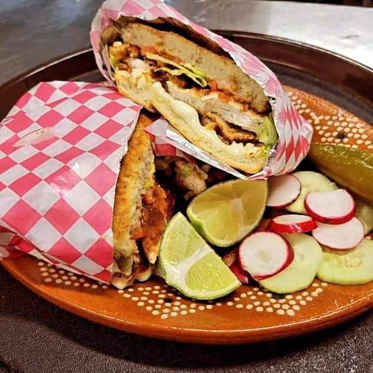

Tacos, tortas & sabor on Covington Pike
A Memphis taco truck with fair prices, big portions and food that’s always hot. 4.6★ from 96 Google reviews.
Call (901) 273-3947La carta
La Torta
La carta
No. 1El TacoAsada, steak & chorizo
No. 2La TortaSteak torta, a regular’s favorite
No. 3El BurritoBurrito de asada
No. 4La SalsaNice and spicy
Memphis says
My babies ❤️they are so sweet it never takes longer than 10-15 mins. My food is always HOT and their prices are fair. They deserve all of the business❤️❤️ Food is flavorful and the location us super clean!
I've eaten here just about every time I go to Sam's in the past 3 years - and let me tell you, everything on the menu is utterly phenomenal! I highly, highly, HIGHLY recommend the steak torta- one of my absolute favorite foods in any restaurant, period. A word of warning to those who are spice sensitive: the green sauce that comes with your meal is the hot one, the red one's just delicious flavor.
I've only tried a few taco trucks around town, but this truck is so good that I can't see anyone topping them. The portions are great, I've gotten 3 tacos and felt cheated at some places but 3 tacos here will fill me up. The tortas and quesadillas will stuff you, and at $7 that's a pretty good bang for the buck. The service is great and it's always a plus when you feel like they acknowledge you as regular- I don't order here as much as I used to (changed jobs and live slightly further away now), and they seem genuinely glad to see me pop up. There are several taco trucks closer to me at…